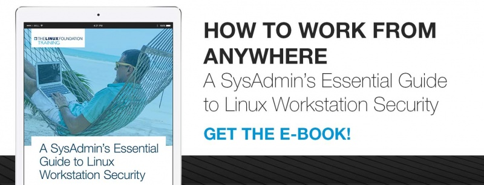

4 Best Practices for Web Browser Security on Your Linux Workstation [1]
There is no question that the web browser will be the piece of software with the largest and the most exposed attack surface on your Linux workstation. It is a tool written specifically to download and execute untrusted, frequently hostile code.
It attempts to shield you from this danger by employing multiple mechanisms such as sandboxes and code sanitization, but they have all been previously defeated on multiple occasions. System administrators should learn to approach browsing websites as the most insecure activity you’ll engage in on any given day.
There are several ways you can reduce the impact of a compromised browser, but the truly effective ways will require significant changes in the way you operate your workstation.
1: Graphical environment
The venerable X protocol was conceived and implemented for a wholly different era of personal computing and lacks important security features that should be considered essential on a networked workstation. To give a few examples:
• Any X application has access to full screen contents
• Any X application can register to receive all keystrokes, regardless into which window they are typed
A sufficiently severe browser vulnerability means attackers get automatic access to what is effectively a built-in keylogger and screen recorder and can watch and capture everything you type into your root terminal sessions.
You should strongly consider switching to a more modern platform like Wayland, even if this means using many of your existing applications through an X11 protocol wrapper. With Fedora starting to default to Wayland for all applications, we can hope that most software will soon stop requiring the legacy X11 layer.
2: Use two different browsers
This is the easiest to do, but only offers minor security benefits. Not all browser compromises give an attacker full unfettered access to your system — sometimes they are limited to allowing one to read local browser storage, steal active sessions from other tabs, capture input entered into the browser, etc. Using two different browsers, one for work/ high security sites, and another for everything else will help prevent minor compromises from giving attackers access to the whole cookie jar. The main inconvenience will be the amount of memory consumed by two different browser processes.
Here’s what we on The Linux Foundation sysadmin team recommend:
Firefox for work and high security sites
Use Firefox to access work-related sites, where extra care should be taken to ensure that data like cookies, sessions, login information, keystrokes, etc, should most definitely not fall into attackers’ hands. You should NOT use this browser for accessing any other sites except select few. You should install the following essential Firefox add-ons:
NoScript
• NoScript prevents active content from loading, except from user whitelisted domains. It is a great hassle to use with your default browser (though offers really good security benefits), so we recommend only enabling it on the browser you use to access work-related sites.
Privacy Badger
• EFF’s Privacy Badger will prevent most external trackers and ad platforms from being loaded, which will help avoid compromises on these tracking sites from affecting your browser (trackers and ad sites are very commonly targeted by attackers, as they allow rapid infection of thousands of systems worldwide).
HTTPS Everywhere
• This EFF-developed Add-on will ensure that most of your sites are accessed over a secure connection, even if a link you click is using http:// (great to avoid a number of attacks, such as SSL-strip [2]).
Certificate Patrol is also a nice-to-have tool that will alert you if the site you’re accessing has recently changed their TLS certificates — especially if it wasn’t nearing expiration dates or if it is now using a different certification authority. It helps alert you if someone is trying to man-in-the-middle your connection, but generates a lot of benign false-positives.
You should leave Firefox as your default browser for opening links, as NoScript will prevent most active content from loading or executing.
Chrome/Chromium for everything else
Chromium developers are ahead of Firefox in adding a lot of nice security features (at least on Linux [3]), such as seccomp sandboxes, kernel user namespaces, etc, which act as an added layer of isolation between the sites you visit and the rest of your system.
Chromium is the upstream open-source project, and Chrome is Google’s proprietary binary build based on it (insert the usual paranoid caution about not using it for anything you don’t want Google to know about).
It is recommended that you install Privacy Badger and HTTPS Everywhere extensions in Chrome as well and give it a distinct theme from Firefox to indicate that this is your “untrusted sites” browser.
3: Use Firejail
Firejail is a project that uses Linux namespaces and seccomp-bpf to create a sandbox around Linux applications. It is an excellent way to help build additional protection between the browser and the rest of your system. You can use Firejail to create separate isolated instances of Firefox to use for different purposes — for work, for personal but trusted sites (such as banking), and one more for casual browsing (social media, etc).
Firejail [4]is most effective on Wayland, unless you use X11-isolation mechanisms (the —x11 flag). To start using Firejail with Firefox, please refer to the documentation provided by the project:
• Firefox Sandboxing Guide [5]
4: Fully separate your work and play environments via virtualization
This step is a bit paranoid, but as I’ve said (many times) before, security is just like driving on the highway — anyone going slower than you is an idiot, while anyone driving faster than you is a crazy person.
See the QubesOS [6]project, which strives to provide a “reasonably secure” workstation environment via compartmentalizing your applications into separate fully isolated VMs. You may also investigate SubgraphOS [7] that achieves similar goals using container technology (currently in Alpha).
Over the next few weeks in this ongoing Linux workstation security series, we’ll cover more best practices. Next time, join us to learn how to combat credential phishing with FidoU2F and generate secure passwords with password manager recommendations.
 [8]
Read more:
Part 6: How to Safely and Securely Back Up Your Linux Workstation [9]
Part 1: 3 Security Features to Consider When Choosing a Linux Workstation [10]